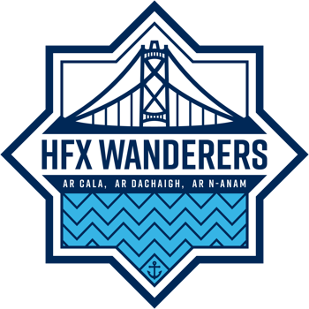
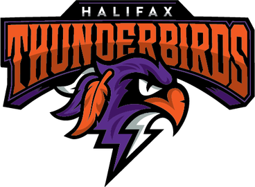
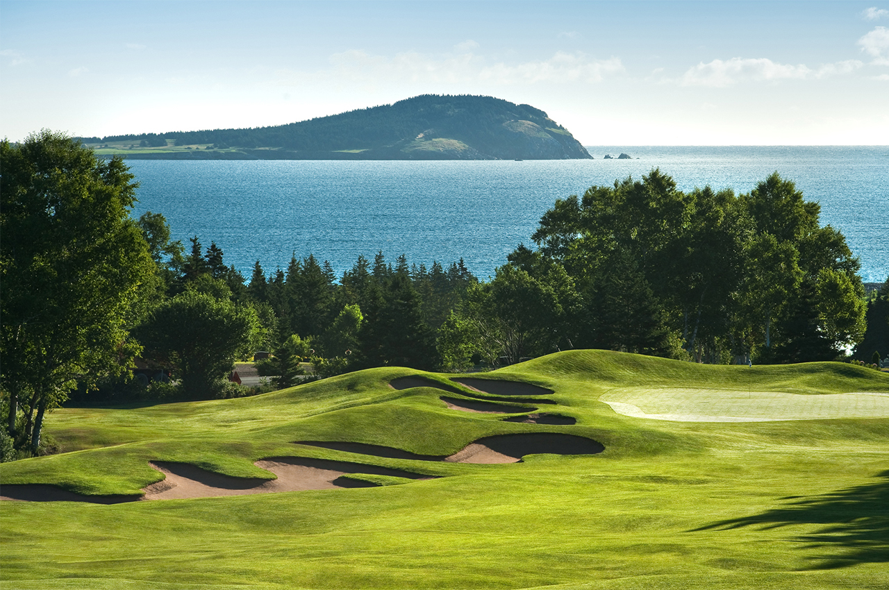
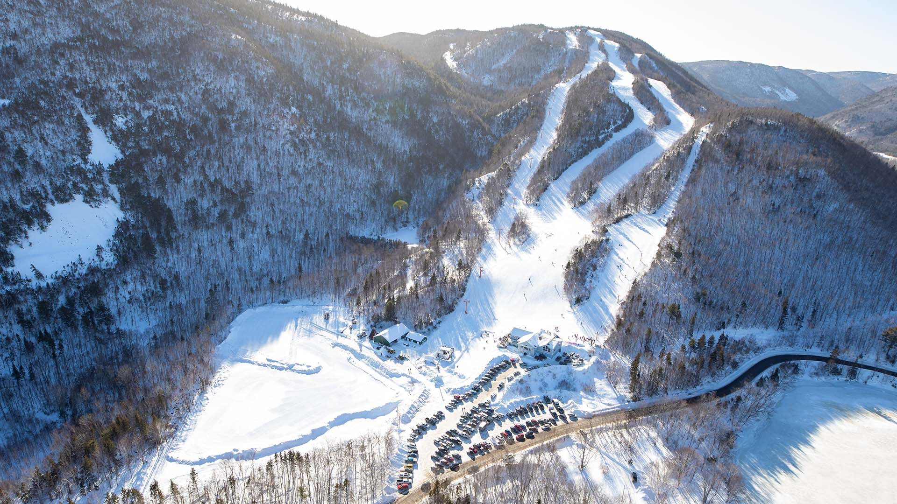

Map of Halifax
Current Weather
Halifax, Nova Scotia
Professional Teams
Halifax Wanderers - CPL Soccer:

Season: March to October
Venue: Wanderers Grounds
Website: Halifax Wanderers FC
Twitter: @HFXWanderersFC
Halifax Thunderbirds - NLL Lacrosse

Season: December to May
Venue: Scotiabank Centre
Website: Halifax Thunderbirds
Twitter: @HFXThunderbirds
Recreational Activities
Golf

Cabot Cliffs and Cabot Links Golf Courses
Website: Cabot Capebreton Golf
Location: Inverness, Nova Scotia (4hr drive from Halifax)
Highland Links Golf Course
Website: Highland Links Golf Course
Location: Ingonish Beach, Nova Scotia (4.5hr drive from Halifax)
Fox Harb'r Golf Resort
Website: Fox Harb'r Golf Resort
Location: Wallace, Nova Scotia (2hr drive from Halifax)
The Links at Brunello
Website: The Links at Brunello
Location: Timberlea, Nova Scotia (0.5hr drive from Halifax)
Website: Cabot Capebreton Golf
Location: Inverness, Nova Scotia (4hr drive from Halifax)
Highland Links Golf Course
Website: Highland Links Golf Course
Location: Ingonish Beach, Nova Scotia (4.5hr drive from Halifax)
Fox Harb'r Golf Resort
Website: Fox Harb'r Golf Resort
Location: Wallace, Nova Scotia (2hr drive from Halifax)
The Links at Brunello
Website: The Links at Brunello
Location: Timberlea, Nova Scotia (0.5hr drive from Halifax)
Ski

Ski Cape Smokey
Website: Cape Smokey
Location: Ingonish Beach, Nova Scotia (4.5hr drive from Halifax)
Ski Ben Eion
Website: Ski Ben Eion
Location: Ben Eoin, Nova Scotia (4hr drive from Halifax)
Ski Wentworth
Website: Ski Wentworth
Location: Wentworth, Nova Scotia (1.5hr drive from Halifax)
Ski Martock
Website: Ski Martock
Location: Windsor, Nova Scotia (1hr drive from Halifax)
Website: Cape Smokey
Location: Ingonish Beach, Nova Scotia (4.5hr drive from Halifax)
Ski Ben Eion
Website: Ski Ben Eion
Location: Ben Eoin, Nova Scotia (4hr drive from Halifax)
Ski Wentworth
Website: Ski Wentworth
Location: Wentworth, Nova Scotia (1.5hr drive from Halifax)
Ski Martock
Website: Ski Martock
Location: Windsor, Nova Scotia (1hr drive from Halifax)